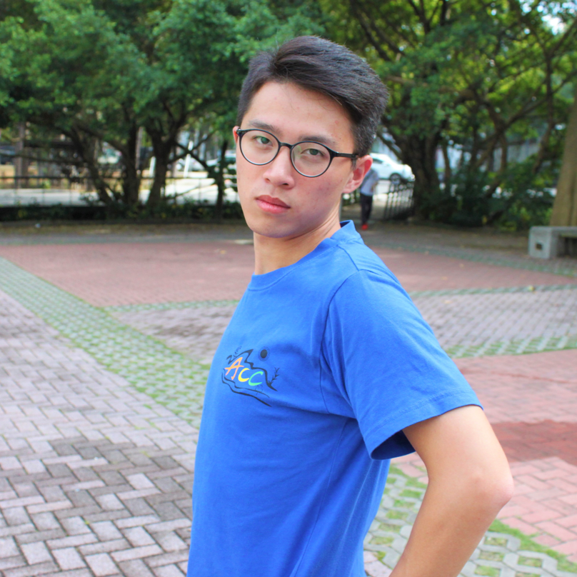

公司職員簡介
姓名 : 勛
職稱 :2017泰崗小隊長、 2016假日營劇四股長、 2017冬令營活動股長
入社年份 : 2015-2017
特殊表現 : 泰崗色魔、性愛狂人、做飯專家、情史豐富、曾經跟很厲害的人曖昧、大三GPA4.3、帶起泰崗口頭禪風潮(What、什麼意思)(上面都是林巡演打的他真的很愛你)、168CM、新竹市長林智堅
員工表現

林勳諺
王政勛你長相不行、個性不行、臉不行感覺一無是處但是我還是愛你<3畢業快樂
ㄐㄩ
我的第一個股長變態勛ㄦ，首先肯認你是有智商邏輯跟思考層次的人，只可惜聰明總是用在奇怪的地方，雖然很高興這一年一起打桌遊打麻將的時光，但希望未來你可以不要再意淫我和我的奶頭，畢業快樂，再次希望你可以正常一點，然後找個好工作包養我，愛心愛心
硬魚
貓貓迷因愛好者，祝你老有所終，壯有所用，幼有所長，改天來吸貓
林學
我永遠記得你們大二送舊的時候你質問我問啥有寫給劉書和蘇哲卡片但沒寫給你，所以我現在補寫給你，不客氣。雖然覺得你真的是無與倫比的怪，但看在你說我做的司康好吃的份上，我相信你本性是善良的。祝你未來一切順利，和王宇當室友愉快，改日登門造訪:)
喔對我是魏孜旻
泰崗耍冗小隊長，大概會永遠記得大家在拔草你在旁邊乘涼睡覺，但你還是帶給大家滿多歡樂了拉也是不錯。畢業快樂希望你畢業後可以正常點。
泰崗HB(handsome boy)
你超好笑，你一講話我就想笑了，而且還會用超高分貝講一堆很惱人的口頭禪。希望你可以向我多學習冷笑話的功力，畢竟我的帥你無法駕馭，我的長你也無法截取，只好吸取我的內在美了。祝你每天都有新鮮的蛋蛋可以看。
妤
請問泰崗handsome boy是哪位沒有這位人士吧
妤
最初的劇四的股長，還有最後的泰崗的股長，雖然你真的很怪，又在茶葉田上偷懶睡覺，但我覺得你是個有條理跟細心的人，你說你是泰崗小隊長的時候就想說跟你上山應該會蠻有趣的吧，還有蘇哲跟劉書榕榕寶。謝謝是你們，讓我這麼喜歡泰崗唷ヽ(●´ε｀●)ノ祝你研究所順利然後你什麼時候才要一起上山少在那邊裝死
源芳
一開始對你的印象就是大家都說你醜但我覺得還好啊而感到困惑，而真正認識你大概就是在泰崗了!你真的很愛講一些口頭禪害我到現在還改不回來XD不過也因此上山時光充滿歡樂ˊˇˋ謝謝你啦～畢業快樂喔！
皓淳
雖然我真的不喜歡梳油頭的人，但你可以成為那個例外。你是一個多元融合的人，有時候很冗有時候又蠻賢慧的，講話很有詐騙的感覺所以可以收服牧師，而且閒暇時還指使我幫你畫畫，但總的來說我是蠻喜歡你這個人的啦!可以因為泰崗而認識你是一種幸運吧!(是說既然你那麼會想口頭禪搞不好可以競選一些政治人物。)那就祝你畢業快樂啊~